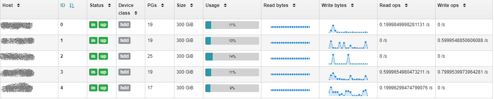

[Kubernetes] 使用 Rook Ceph 为监控系统提供持久化存储
[Kubernetes] Using Rook Ceph to Provide Persistent Storage for Monitoring System
Kubernetes 集群上，运行在某个节点上的 Prometheus， 可能因为种种原因，出现 pod 重启，或者漂移到 K8S 的其他节点，或者重新部署等情况。在没有引入远端存储之前，我们设定 Prometheus 本地数据保存30天。虽然30天后数据会被覆盖，但在30天内，我们不希望因为前面这些原因，造成任何数据丢失。另一方面，从 Prometheus 的角度，除了临时性的通过 emptyDir 存储数据，也提供了持久性存储的选择，那么这个问题实际上可以概况为用什么方案保证 kubernetes 上数据的持久性。这就不得不提到 Rook & Ceph.
为什么需要 Ceph
使用外部的企业级存储通过 CSI 为 kubernetes 提供数据持久化当然是一个方式，不过也存在许多需要考虑的方面，比如企业存储的成本，灵活性，对块、文件、对象的支持等，而 CSI driver 能否把企业存储的数据能力平移到 K8S 环境中，以及 CSI driver 自身的性能和稳定性又如何等等。另一方面，现在的节点配置高性能 SSD 越来越普遍，把集群中所有节点的本地 SSD 集中并共享，也是解决 K8S 集群数据持久化不错的方式。
Ceph 就是这样一个开源的分布式存储集群。实际上 Ceph 存在已多年，得益于底层的架构和一系列算法，Ceph 具有高性能，高可用，高扩展性等优势，并提供了对块、文件和对象的支持。
我们用到的是 Ceph 分布式块存储（RDB）部分，RDB 包装了 Linux 内核模块与 Ceph 核心的交互过程，是对 Ceph 核心一个更高层次的抽象，同时提供标准的块设备接口，便于应用程序像使用普通硬盘一样使用 Ceph 块设备。

为什么需要 Rook
Kubernetes 原生支持 Ceph 块存储作为其持久化存储的后端，所以在 K8S 集群上，通过 Ceph-CSI 对接 Ceph 集群是一个可行的办法。但是整个过程还需要相应配置和创建 config-map，secret，authentication，storage class 等等一系列资源，繁琐而且容易出错，这时就需要 Rook 出场了。
Rook 是一个开源的 cloud-native storage 编排, 旨在将存储系统转换为运行在 kubernetes 上的云原生服务，以便让云原生环境能受益于诸多的传统存储。Ceph 是 Rook 最重要的一个编排对象，通过 kubernetes operator 的模式，Rook 封装了 Ceph 的运维经验，不仅将 Ceph 的部署自动化，也把对 Ceph 集群相对复杂的管理转化成 kubernetes 原语。集群中的其他应用，比如 Prometheus，则通过 Rook 提供的 Ceph-CSI driver 来使用 Ceph 存储，实际上这个时候，在 Rook 的加持下，Ceph 已经成为一个存储服务了。

Rook-Ceph 的部署
Rook-Ceph 可以通过 github 上的配置文件部署，也可以通过 Helm 部署。
以下是通过配置文件直接部署的过程。Rook 版本为 v1.4.5，kubernetes v1.19.3
前提条件
Rook-Ceph 要求运行 Ceph 的节点上需要准备符合要求的裸设备，所谓符合要求，是指要么是没有分区的裸设备，要么是没有文件系统的裸分区。
部署 Rook Operator
Operator 的部署比较简单：
1 | kubectl create -f common.yaml |
其中，common.yaml 包含了一些必要的准备工作，用于创建接下来 operator 以及之后 Ceph 集群需要的各种资源，诸如各种 CRD 声明， RBAC 等等。
创建 Rook Ceph 集群
1 | kubectl create -f cluster.yaml |
其中，比较关键的信息是 dataDirHostPath, Ceph 集群将用各个节点上的该目录来存放数据，在创建集群时，必须保证相关节点的该目录为空。
1 | spec: |
部署 Rook Toolbox
Rook toolbox 包含了基本的工具，在排查问题的时候会用到。查询 Ceph 集群状态，也需要用到 toolbox.
1 | kubectl create -f toolbox.yaml |
创建之后会在 rook-ceph 命名空间下生成一个 pod，进入该 pod
1 | kubectl -n rook-ceph exec -it $(kubectl -n rook-ceph get pod -l "app=rook-ceph-tools" -o jsonpath='{.items[0].metadata.name}') bash |
并通过 ceph 命令查看集群各方面状态
- ceph status
- ceph osd status
- ceph df
- rados df
创建 Ceph Dashboard
在 Ceph 集群的配置文件中，默认即会部署 dashboard，因此会在 rook-ceph 命名空间下生成 dashboard 的 service.
1 | spec: |
有一点需要注意，这个 service 是 ClusterIP 类型的，无法从 K8S 外访问。为此，Rook 提供了 NodePort，Ingress 以及 Load balancer 类型的配置文件，可以相应部署。
创建 Storage Class
由于使用块存储，我们需要创建的是 Rook-Ceph 的 block storage class. 与之同时创建的，还有一个 Ceph Block Pool，这是一个 CRD 资源，在第一步的 common.yaml 中有定义。
1 | kubectl create -f storageclass.yaml |
至此，Rook-Ceph 存储服务全部部署完成，Prometheus 可以通过 storage class 使用 Ceph 存储了。
通过 dashboard 直观监测到我们的5个存储节点的运行状态：
